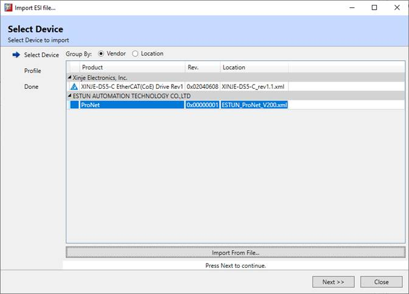
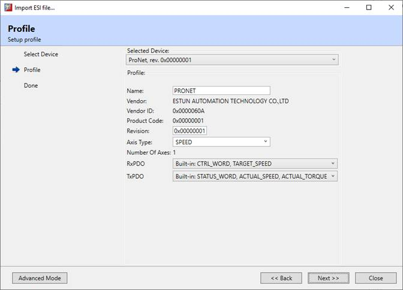
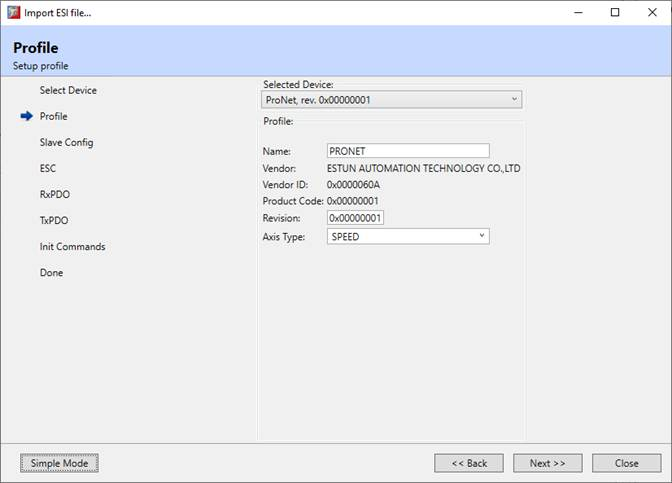
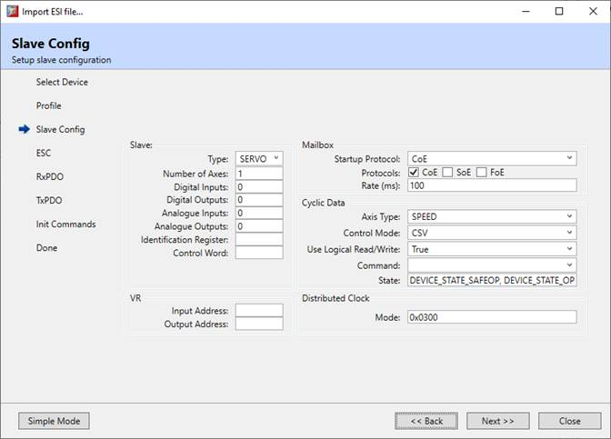
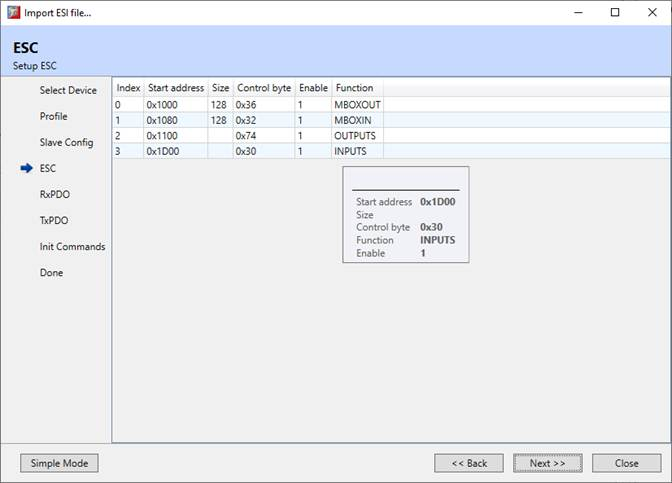
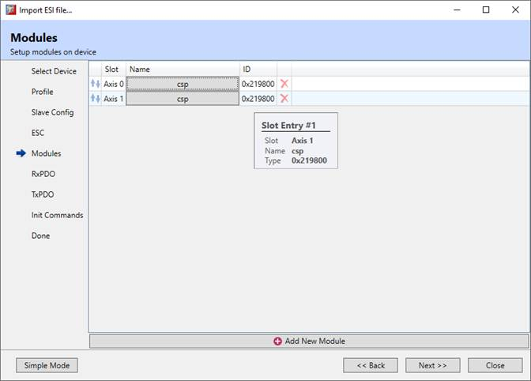
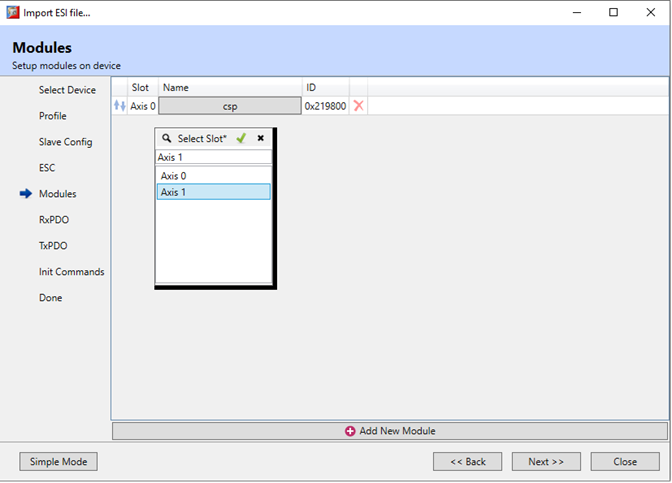
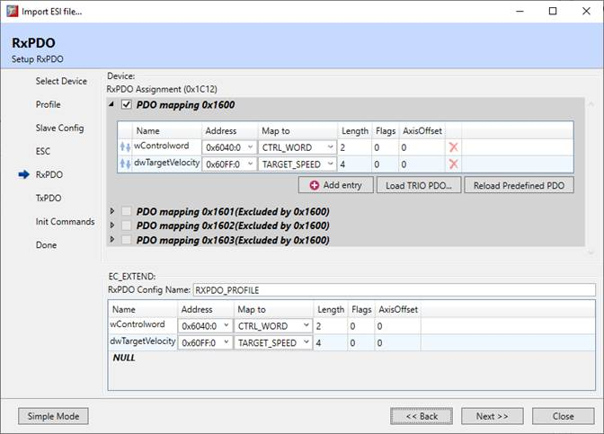
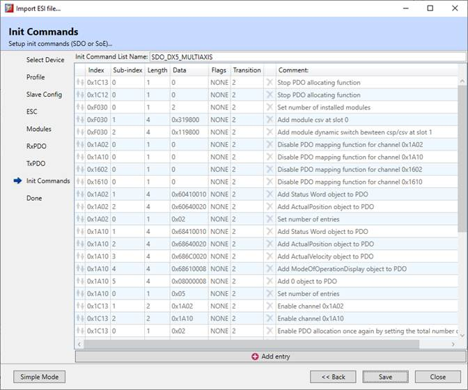

EtherCAT Slave Information Import
Controller firmware has built-in database
with profiles for many EtherCAT devices. Devices that are not in the database
can be supported by adding an
EC_EXTEND
file containing the
corresponding device information (profile).
The most important parts of a device
profile defined in EC_EXTEND are:
-
Vendor ID
-
Product ID
-
Profile revision
-
Slave type
-
Axis count, digital and analog IO count
-
Data transmitted from device (RxPDO)
-
Data received by device (TxPDO)
-
Sync manager setup
-
SDO initialization commands
Motion Perfect provides tools for creating
the
EC_EXTEND
file based on the EtherCAT Slave Information file provided by the
device’s vendor.
Note : according to the EtherCAT specification,
every EtherCAT device vendor should provide a device description file for their
devices, the so called EtherCAT Slave Information file (ESI file). It is an xml
file with specific structure and usually can be found on the vendor’s website.
The tool auto-fills much of the necessary
information for a device profile by parsing the ESI file. One of the most
complex parts is defining the SDI initialization commands. The tool
auto-generates this list depending on the RxPDO and TxPDO data.
The ESI import tool can be launched from a
couple of locations in Motion Perfect:
-
Context menu of device/controller in EtherCAT
network diagram
-
Toolbar command on EC_EXTEND text editor
-
Toolbar command on EC_EXTEND guided editor
The ESI import tool works in two modes:
-
Simple mode. This mode is the default one, in
case the device is simple enough and the tool can auto-fill the required
information and generate EC_EXTEND file.
-
Advanced mode. This mode is activated either by
user request or when the device is too complex to auto-fill the required
information.
Steps of importing ESI file
Selecting a device
When launched the tool provides option to
select for which device to create a profile for. If the device is not in the
list, its ESI file can be imported and then the device will appear in the list
of available devices. After selecting the device the tool can proceed to the
next step.

Definition of the profile
Working in simple mode
In Simple mode, the profile is specified on
a single screen

The properties that can be modified are:
-
Name: the name of the profile
-
Revision: by default it is auto-filled based on
the ESI file, but could be changed
-
Axis type : this property defines the axis
control mode for servo drives and stepper motors. The possible values are
POSITION, SPEED, TORQUE.
Note : the selected axis type must correspond to
the selected RxPDO and TxPDO
-
RxPDO : data received by the device. Usually the
device defines some built-in RxPDOs and also there are some Trio predefined
RxPDOs which the device could support that could be selected from the drop
down.
-
TxPDO : data transmitted from the device. Usually
the device defines some built-in RxPDOs and also there are some Trio predefined
RxPDOs which the device could support that could be selected from the drop
down.
Important: in case of multi-axes servo drives /
stepper motors, the RxPDOs and TxPDOs contain the same set of data for every
axis. For example a two-axes servo drive in position mode would have a RxPDO :
CTRL_WORD, TARGET_POSITION, CTRL_WORD, TARGET_POSITION
The profile can be generated by pressing
the “Next” button.
In case more flexibility is needed, the
tool can be switched to advanced mode by pressing the “Advanced mode” button at
the bottom left corner of the tool.
Working in Advanced mode
In advanced mode the tool provides a couple
of screens.
Profile screen

Similar to the Simple mode profile screen,
but allows only to modify the Name, Revision and Axis Type properties.
Slave Config screen

This screen allows to modify slave
configuration properties.
Slave Group
-
Type: This property defines the slave type. Most
common slave types are SERVO or digital/analog input/output devoces.
-
Number of axes: This property defines the number
of axes that the controller shall allocate when loading the profile for this
device.
-
Digital Inputs: The number of digital inputs
this device has and that are mapped in the TxPDO
-
Digital Outputs: The number of digital ouputs
this device has and that are mapped in the RxPDO
-
Analogue Inputs: The number of analogue inputs
this device has and that are mapped in the TxPDO
-
Analogue Outputs: The number of analogue ouputs
this device has and that are mapped in the RxPDO
-
Identification Register (Optional): in case the
device supports Explicit Device Identification according ETG.1020/ETG.1000
-
Control Word (Optional):
defines the control word
value used when the drive is enabled (this is the final state value) when it is
in the operational ESM state. The value is written to CoE object 0x6040:00 or
the SoE IDN 134.
Note that it is also necessary to set the Control Mode property
to USER_DEFINED (since it defines the control word enabled value.)
VR Group
-
Input Address: the VR index of VR mapped data of
device’s TxPDO
-
Output Address: the VR index of VR mapped data
of device’s RxPDO
Mailbox Group
-
Startup protocol : the startup mailbox protocol.
Usually CoE
-
Protocols: protocols that the device supports
-
Rate: mailbox rate in milliseconds
Cyclic Data Group
-
Axis Type : in case an axis is allocated for the
device, this property determines the ATYPE that will be set for the
corresponding axis
-
Control Mode: this property is related to the
previous (Axis Type) and determines the control mode of the device.
-
Use Logical Read/Write : this property defines
if the ESC supports the LRW command or the master should use the LRD and LWR.
Default is false, which means the master shall use the LRW command. Otherwise
the master shall use the LRD and LWR commands.
-
State : defines at which states of the ESM the
device supports cyclic data. Usually these are safe operational and
operational.
Distributed Click Group
-
Mode :
defines the Slave configuration’s Distributed
Clock information. This is the value written to ESC regiser 0x980
ESC screen
The ESC screen displays the imported
EtherCAT Slave Chip configuration information. Currently the Sync Manager (SM)
configuration is supported only.

Every SM entry has the following
properties:
-
Index : SM’s index
-
Start address: SM’s logical start address
-
Size: SM’s size. Note that the size of the
INPUTS and OUTPUTS are dynamic and are calculated based on the PDOs
-
Control byte: SM’s control byte
-
Enable: enable/disable this SM
-
Function: function of SM. Possible values are
MBOXIN, MBOXOUT, INPUTS, OUTPUTS, BOOTMBOXIN, BOOTMBOXOUT
Modules screen
Some devices have modular structure. For
example a two-axis servo drive could be implemented with a modular design by
having a module for each axis.
The ESI file specifies the available and
default modules for a device and they are shown on the Modules page.
A module is always inserted into a slot.
The slot types and module types acceptable by a slot are defined in the ESI
file. The ESI file also might define the maximum and minimum number of times a
particular slot type might occur.
When importing the ESI file Motion Perfect
will create a default module configuration based on the ESI file.

Every module has the following properties:
-
Slot. A module is always inserted at a slot of a
specified type. The slot name identifies uniquely the slot. The slot type is
selected when adding the new module.
-
Name. The name defined in the ESI file.
-
Id. The identification of the module as defined
in the ESI file. This value is written to the 0xF030 configured modules address
at initialization to configure the device. The id can be changed from the
drop-down menu of the “Name” column.
When trying adding a new module, the slot
type is selected from a drop-down menu:

The default module type will be set for the
new slot.
RxPDO / TxPDO screens
Every EtherCAT device that participates in
the cyclic data transfer has PDOs that are received or transmitted during
operation.
The device usually has a single PDO
assignment object for receive (0x1C12) and a single PDO assignment object for
transmit (0x1C13).
These assignment objects contain (multiple)
PDO mapping objects. Usually RxPDO mapping objects start at 0x1600 and TxPDO
mapping objects start at 0x1A00.
Every PDO mapping object defines a list of
PDOs that are transmitted/received by the device.
The complete list of PDO mapping objects
which are set up in the PDO assignment object defines the full PDO profile of
the device.
Some devices have fixed PDO mapping
objects, some of the PDO mapping objects could be mutually exclusive (i.e. only
one of them could be set up in the PDO assignment object) and some devices have
multiple PDO mapping objects, some of which could turned on/off and some of
which could be mandatory.

The RxPDO/TxPDO screen consists of 2 parts:
-
Top part (Device) shows the available PDO
mapping objects on the device. The individual objects could be enabled/disabled
and the PDOs in the PDO mapping objects could be edited.
-
Bottom part (EC_EXTEND) shows the complete RxPDO
/ TxPDO profile of the device that is going to be stored in the EC_EXTEND file.
The list is composed of all PDOs from all enabled PDO mapping objects of the
device
Every PDO mapping object has the following
properties:
-
Enable – a PDO mapping object can be enabled or
disabled. If it is enabled, it is added to the PDO assignment object and the
PDOs in it are added to the cyclic data that is received/transmitted. It can be
disabled by the user or by another PDO mapping object that is mutually
exclusive with it.
-
Fixed – read-only property defined in the ESI
file. In case a PDO mapping object is fixed, PDOs can not be removed, added or
modified and only the list of PDOs is defined in the ESI file.
-
Mandatory – read-only property defined in the
ESI file. If a PDO mapping object is mandatory, it is always enabled and is
added to the PDO assignment object.
-
Excluded by – read-only property defined in the
ESI file. PDO mapping objects could be mutually exclusive with each other.
Note : To enable a disabled mutually exclusive
PDO mapping object, first disable the PDO mapping object that is mutually
exclusive with it and then enable the desired PDO mapping object.
-
List of PDOs (Process data objects) that are
mapped in this PDO mapping object. Some devices have fixed PDO mapping objects
and the PDOs in these mapping objects can not be altered. However many devices
have configurable PDO mapping objects and PDOs can be added, removed or moved
inside the list.
Every PDO in the
PDO mapping object has the following properties:
-
Name (optional). The name is usually taken from
the ESI file
-
Address. This is the CoE object address of the
PDO
-
Map To. This is the target object in controller
memory that the CoE object is mapped to
-
Length (in bytes). The length of the data of this
object
-
Flags. Do not use. Must be zero.
-
Axis Offset (read-only). Automatically
calculated axis offset of PDO object in case of multi axes slave / modular
device based on address, axis index, slot offset, etc.
In case a PDO
mapping object is not fixed, entries can be added, removed or modified.
There are 3
buttons that are enabled for every PDO mapping object when it is not fixed:
-
Add entry. This adds a new empty entry at the
end of the PDO mapping object
-
Load TRIO PDO. This displays dialog for
selecting a predefined RxPDO/TxPDO list
-
Reload Predefined PDO. This reverts all
modifications done by the user to the PDO mapping object and loads the PDOs
defined in the ESI file for the PDO mapping object.
Init Commands screen
This page shows the list of initialization
SDO commands for the device. The RxPDO and TxPDO configuration automatically
generates a list with corresponding SDO commands. In addition, there could be
SDO initialization commands defined in the ESI file which are appended at the
end of the list.
And it is possible to add user-defined SDO
initialization commands at the end of the list.

Saving the profile

If the tool is operated in Tool mode from
Motion Perfect it will generate a new EC_EXTEND file and prompt where to store
the file.
If the tool is operated in Sync mode from
Motion Perfect there are two cases:
-
If an EC_EXTEND file doesn’t yet exist, it will
automatically create one and add the generated profile to it.
-
If an EC_EXTEND file exists already, it will
merge
the generated profile with the existing EC_EXTEND file.